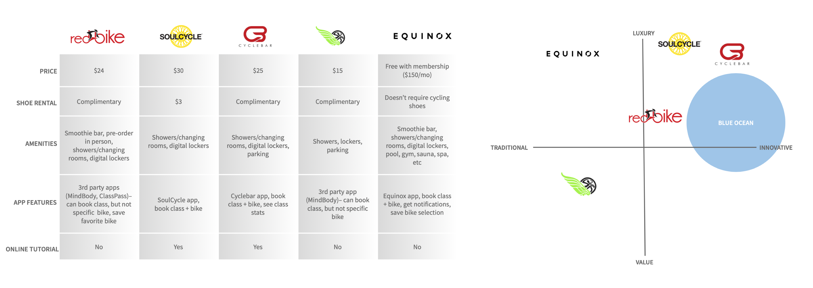

Challenge
As a new designer I was givin the opportunity to create a useful shopping experience for a local shop’s online users. The purpose of this week was to analyze what is already there and to propose a better solution for the stores online presence. By devoting research time for benchmarking and market research. So, by Friday we needed to have a complete mid fidelity prototype ready to test!
My team; Team Who Run the World chose to help Redbike Studio’s, a local indoor cycling studio. Redbike Studio’s current website has a confusing online flow. A lack of consistency and its hierarchy organization is misleading, which typically focuses on relationship between pages. Redbike Studio’s reported to us that the majority of their users book their class via a 3rd party app or by calling the studio’s landline(Ah-HAH Moment — People still do that?) They wanted to investigate why their users were not booking via their website.
Diving Into the Research
Before going into a deeper dive into Redbike Studio’s website. We went through an effective business and competitors analysis to have a clear picture of the current state of Redbike Studio’s as well as where they stand in the market.
Taking Apart of the Users Tasks
Once we analyzed Redbike Studio’s business and competitors analysis and users we created our User Personas named Spinning Sophia. A user persona is a single kind of user whose needs and goals fit into a single product. Once we created Spinning Sophia profile we generated a Storyboard which helped us visualized her before, during, and after process through out a graphic sequence. To really analyze Spinning Sophia experience in buying a class pack and booking a bike we created a User Journey Map.
We went into a deeper dive into our Task Analysis where we analyzed the psyche of the user as they complete the subtasks of a task. As we went through their website, trying to buy a class pack as well as book a class online, we found annoying the entire process. Once we logged into our account it took us straight to a secure checkout with an automatic error on the top. We felt we kept going back and forth to certain areas in order to complete our task. By the time we booked our bike we felt overwhelmed and frustrated with the whole process.
We created a sitemap to help us visualize how the users goes from the home page to actually buying the service in the current website. Creating an heuristic analysis allowing us to think through all the possible outcomes quickly and arrive at solution that will work for Redbike Studio’s problem.

In order to help RedBike Studios, we wrote on post-its a bunch of “How might we…” scenarios. We categorized them, and then voted on the best one which was the following:
“How Might We Improve Upon RedBike Studios Website to Make Booking a Class Easier and Efficient?”
We believe creating a more user-friendly platform with pre-order options and an intuitive flow will achieve our goal of increasing online class bookings, food/drink pre-orders, and user satisfaction.
We will know we are right when we can prove that more bikes are being booked through the website instead of 3rd party apps or phone calls AND when RedBoost pre-orders increase.
Starting the Revolution
In order to create a more user-friendly platform we needed to create an illustration of movement through the website showing us how users got from point A to point B. By defining how our users can accomplish a task we created a User Flow chart to plan the screens needed to generate our Lo-Fi Wireframe.
Once we had our Lo-Fi Wireframes we created Usability Test Report where we can see how quickly our users can perform the task as well as how many errors do the user make. One of our biggest takeaways was that our users where not familiar with the program and wanted to click areas that weren’t clickable. In order to move the design process foward we made a couple of word changes and modify certain location of areas where users are meant to click.
Final Design
We changed a few minor wording and moved onto our Mid-Fidelity Wireframes. Our next step would be to test the mid-fidelity wireframes as well as develop a RedBike app so that the studio can compete in the marketplace. Between these two solutions, booking on the phone should decrease significantly.